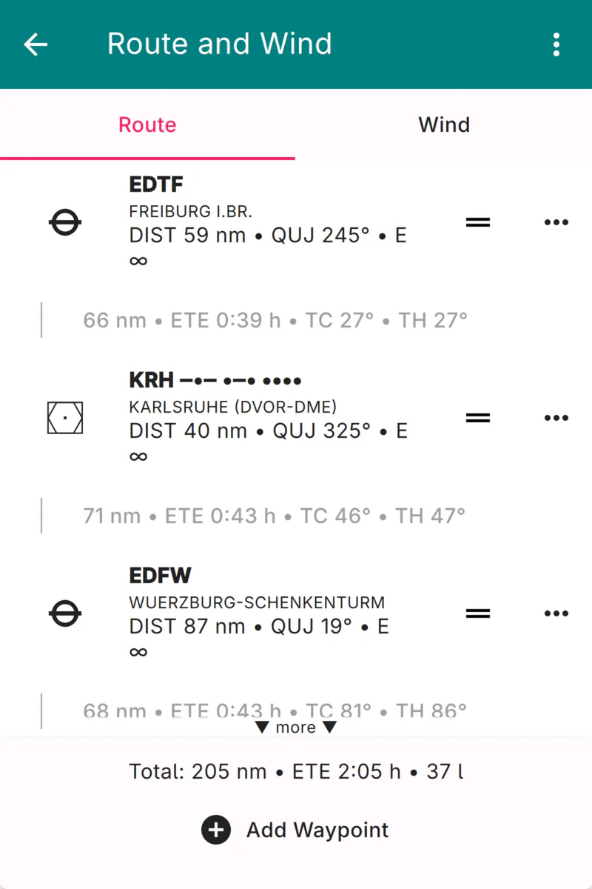
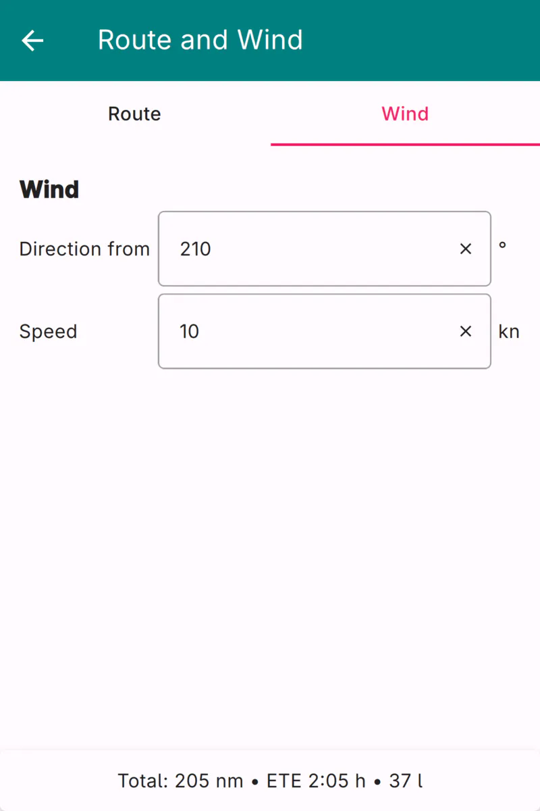

Route and Wind
The Route and Wind Page is used to assemble a flight route, to reorder and edit its waypoints, and to review the distance, time, and fuel estimates that Enroute Flight Navigation computes for the route. The page also lets you specify the wind that is used for these estimates.
The page is divided into two tabs, “Route” and “Wind,” which are selected with the tab bar below the page header.
Page Header
The three-dot-menu in the top right corner of the page header opens a menu with the following functions. Except for “View Library…,” all entries are disabled while the route is empty or while the “Wind” tab is selected.
- View Library…
Open the Route Library Page, where you can select a route that you have saved earlier.
- Save to library…
Save the current route to the route library for future use.
- Import…
Import a route from a file that was written by another program. A list of supported file formats is found in the Section Supported File Formats.
- Share… / Export…
Share or export the current route as a GeoJSON, GPX, Garmin FPL, or MSFS PLN file. The entry is labeled “Share…” on Android and iOS and “Export…” on desktop systems. The Garmin FPL format is useful for transferring the route to Garmin avionics, such as the G3X; the MSFS PLN format is understood by flight simulators.
- Save…
Save the current route as a GeoJSON, GPX, Garmin FPL, or MSFS PLN file. A system dialog opens, where you can choose the location and the file name. This entry exists on Android only. On desktop systems, the entry “Export…” saves the route to a file; on iOS, the share dialog offers the option “Save to Files”.
- Open in Other App…
Hand the current route, in GeoJSON, GPX, Garmin FPL, or MSFS PLN format, to another application on your device. This entry is not available on iOS.
- Copy as Flight Plan
Copy the route to the clipboard as a simple textual flight plan of the form
EDTF DCT KRH DCT EDFW, which is convenient for filing a flight plan in another program.- Clear
Delete every waypoint in the current route.
- Reverse
Reverse the order of the waypoints, so that the route runs from its present destination back to its present departure point.
Page Body: Route Tab
The “Route” tab shows the waypoints of your route, together with the flight legs that connect them.


Route and Wind Page, Route Tab
If the route is empty, the tab shows a short text that explains how to add a first waypoint. Otherwise, the tab lists the waypoints from departure to destination. Each waypoint is shown with its icon, its name, and the distance and true course from the previous position. If weather information is available for the waypoint, a METAR summary is appended and the row is tinted according to the current flight category. Between two waypoints, a leg entry shows the leg distance, the estimated time en route, the true course, and the true heading.
Every waypoint carries a set of controls on its right-hand side.
- Edit
For waypoints that do not refer to pre-set airfields, navaids, or reporting points, a pencil symbol opens a dialog where you can change the name and edit the coordinates. The symbol is hidden for all other waypoints.
- Drag handle
Press the drag handle and move the waypoint up or down to reorder it, as described in the Section Reordering Waypoints below.
- Three-dot-menu
Opens a menu with the following entries:
- Move Up / Move Down
Move the waypoint by one position towards the departure or the destination.
- Remove
Delete the waypoint from the route.
- Add to waypoint library
Add the waypoint to the waypoint library. This entry is only available for user-defined waypoints that are not yet contained in the library.

At the bottom of the tab, a summary line shows the total distance, the estimated time en route, and the estimated fuel consumption for the whole route. The estimates depend on the aircraft data and on the wind; if either is incomplete, the summary explains what is missing. The button “Add Waypoint” opens a dialog that lets you append a further waypoint to the route.
Reordering Waypoints
To change the order of the waypoints, press the drag handle of a waypoint and drag the row up or down. The remaining waypoints move aside to open a gap at the new position, and the route is updated as soon as you release the row. When you drag close to the upper or lower edge of the list, the list scrolls automatically, so that a waypoint can be moved across a route that is longer than the screen.
Dragging is the quickest way to insert a freshly added waypoint into the middle of a long route: append the waypoint with the “Add Waypoint” button, then drag it from the end of the list to its intended position.
Page Body: Wind Tab
The “Wind” tab lets you enter the wind that Enroute Flight Navigation uses to compute the estimated time en route and the fuel consumption for your route.


Route and Wind Page, Wind Tab
- Direction from
Enter the direction, in degrees, from which the wind is blowing.
- Speed
Enter the wind speed. The unit (knots, km/h, or mph) follows the horizontal distance unit configured on the Aircraft Page.
Note
The wind entered here is a single, constant value for the whole route. It is used only for the flight planning estimates and does not affect any other part of Enroute Flight Navigation.